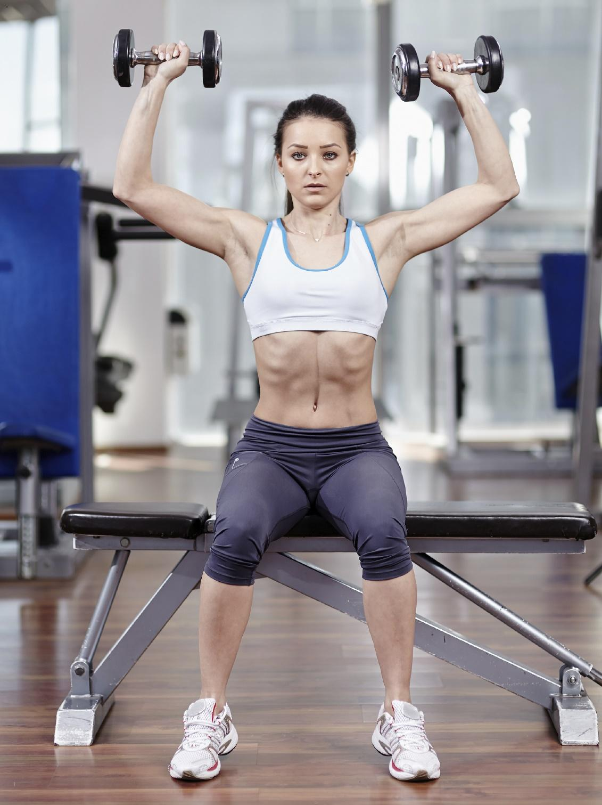

R.MENU
Tener unos brazos tonificados y fuertes es la apuesta de muchas mujeres y hombres, pero lo cierto es que si entrenas para conseguirlo no te puedes olvidar de los hombros, una zona que resulta imprescindible fortalecer y marcar para conseguir unos brazos realmente atractivos y definidos. Conformado por los musculos deltoides anterior, medio y posterior, son diversos los ejercicios que podemos llevar a la practica para ir aumentando la masa muscular de esta zona y con ello su fuerza.
Cuando se trata de los mejores ejercicios para los hombros, las elevaciones frontales son una de las alternativas mas simples y efectivas. Con este ejercicio trabajamos el deltoides medio y el posterior en un solo movimiento, consiguiendo tonificar esta zona con eficacia. En este aspecto es importante elegir mancuernas con el peso adecuado, aquellas muy livianas no permitiran trabajar el musculo de forma adecuada, mientras que si eliges mucho peso es posible que no realices el movimiento de la forma apropiada y corras el riesgo de lesionarte.Para elaborar este ejercicio adecuadamente deberas repetir el movimiento como se muestra en la imagen, estirando los brazos hacia el frente a la altura de la barbilla o un poco mas abajo. Realiza 4 series de 12 repeticiones cada una y aumenta progresivamente la cantidad cuando ganes resistencia.
Al igual que las frontales, las elevaciones laterales son una excelente alternativa para tonificar los hombros de forma eficiente. Con ellas se trabajan el deltoides anterior y el medio, por eso deben complementarse con las frontales para conseguir ejercitar esta zona de forma global.
Para realizar adecuadamente el movimiento los brazos deben levantarse hasta la altura de los hombros, descendiendo luego a la posicion original. Puedes trabajar primero un brazo y luego otro o hacerlo con los dos al mismo tiempo.Como en el caso anterior, la eleccion del peso resulta importante, debes optar por los kilos que te permitan trabajar el musculo con eficacia.
Realiza 4 series de 12 repeticiones cada una y aumenta progresivamente una vez que ganes resistencia y fuerza en la zona.

Otro de los mejores ejercicios para los hombros es el press de mancuernas sentado, una practica con la que conseguiras trabajar los musculos deltoides anterior, posterior y medio asicomo los biceps y el trapecio, siendo una opcion completa para los brazos y tambien para ayudar a fortalecer la espalda. Deberas sentarte en la banca con la espalda recta, toma las mancuernas a la altura de los hombros y estira los brazos por completo por encima de tu cabeza, sentiras como en este movimiento el trabajo se concentra principalmente en la zona de los hombros. Puedes realizar 4 series de 12 o 15 repeticiones, dependiendo de tu resistencia.
El press frontal con barra es un ejercicio muy completo, pues con el trabajamos no solo los hombros al tonificar los deltoides medio y anterior, sino que ademas fortalecemos los triceps, el trapecio y el pectoral mayor.
Para realizarlo correctamente deberemos tomar la barra a la altura de los hombros y alzarla por encima de nuestra cabeza en un solo movimiento, por lo tanto es importante elegir un peso adecuado que podamos manejar. Hacer 4 series de 12 o 15 repeticiones.
El remo al cuello es probablemente uno de los ejercicio mas eficaces debido a la gran cantidad de musculos implicados. Esta alternativa no solo trabaja los hombros sino tambien los omoplatos, los biceps, los antebrazos, abdominales, gluteos e incluso las lumbares.
Realizarlo es muy simple, con la espalda recta y las piernas ligeramente separadas deberas agarrar la barra con las manos separadas por una distancia de alrededor de un palmo, y subirla hasta el cuello para luego bajarla al movimiento inicial. Haz 4 series de 15 repeticiones cada una.
Otros excelentes ejercicios para los brazos
Si ademas de los hombros quieres ejercitar tus brazos de forma completa para conseguir que esten definidos y fuertes, entonces conviene sumar a esta rutina otras alternativas para un entrenamiento completo. En nuestro articulo los mejores ejercicios para fortalecer los brazos te damos algunas buenas opciones a tener en cuenta.
Recuerda que para obtener los mejores resultados es importante: